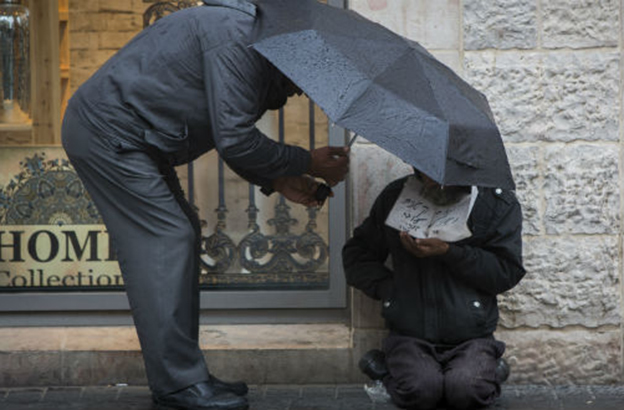
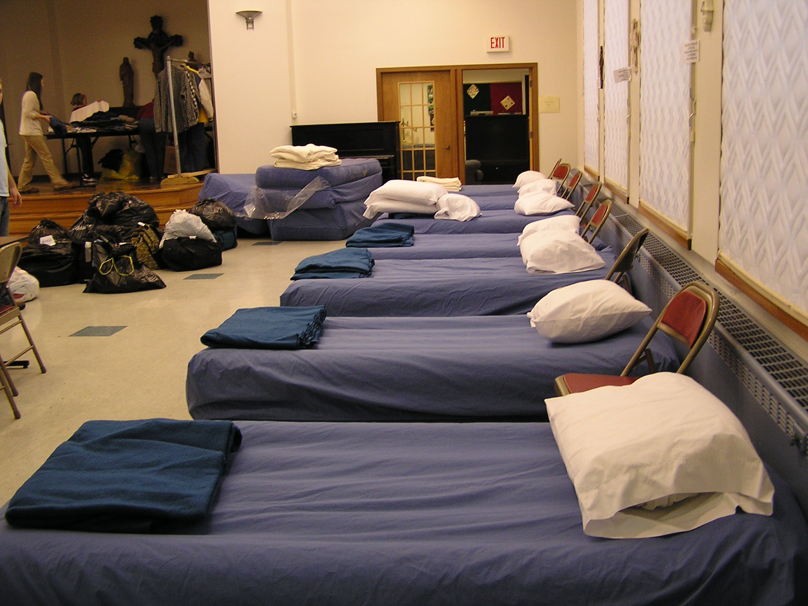

Our 3 main principles for our services are Care, Love, and Hope. CLH collects donated smartphones and refurbishes them to give away to displaced individuals. The phone will keep all of it's original capabilities, but we will program a software to access local shelters, affordable grocery stores, bus stops, and safe spaces onto it. For more information on how to use, access, or donate a phone; explore this site.